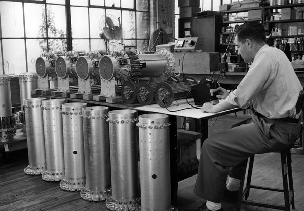

Photo Gallery
Mercury delay tubes were used as a form of memory storage.
Bits were converted to sound waves by transducers, passed through a mercury solution, which slowed down the wave, then picked up by another set of transducers, and looped back to the beginning.

Charles Babbage's 1st Difference Engine.
The Bombe designed by Alan Turing. This device helped the British decipher machine‐encrypted
messages during WWII.

From left to right; ENIAC, EDVAC, ORDVAC, and BRLESC-I boards
A demonstration of the trend towards miniaturization
The Apple‐I. In the mid to late 70's the trend towards personal computers began to grow

Magnetic Drum Memory from a UNIVAC computer.
A precursor to modern HDDs
The future is now. Google's quantum computer.
Able to solve what a virtually impossible problem in 200 seconds
Informational Videos
Babbage's Difference Engine in action
A great talk from developer and author Bob Martin about the beginnings of the software industry
and where it's headed
Excellent video on the evolution of computing
Resources for further learning
- A PDF of The Annotated Turing by Charles Petzold. DEEP DIVE
- A Collection of timelines related to computer technology from the Comuter History Museum
- The Tech Academy, a really awesome bootcamp for learning software development.
Mailing List
Let us bombard you with emails til you unsubscribe!